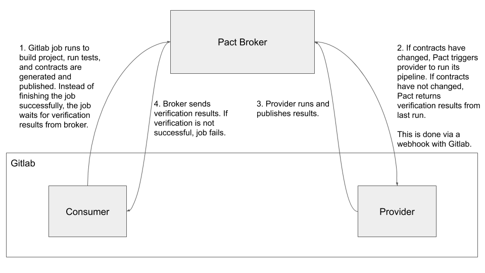

Contract testing with Pact
Microservices have been gaining popularity in recent years and it is not surprising why. Unlike the traditional monolithic service architecture, Microservices allow you to build an application as a collection of services, each with a specific purpose. For example, you can have an accounts service which manages user accounts and a payments service which manages user payments. As great as Microservices sound, it is not without shortcomings. Among its biggest issues is testing (which is, in fact, a common problem not specific to Microservices).
A common and traditional way of testing services is Integration Testing. In Integration Testing, you start all the services that are supposed to work together and run the databases that they are connected to in a clean slate. There's a lot of setup and teardown involved when running an integration test once. Integration tests are known to be brittle, hard to setup, and take a long time to run. An alternative to Integration Testing is Contract Testing.
What is Contract Testing?
Contract testing is not a new idea but has been gaining recognition in recent years as Microservices become more popular. The idea is to test the agreements (contracts) between API providers and consumers. The contracts define the structure of the API requests and responses which both sides must adhere to. Contract Testing is "consumer driven" (commonly known as Consumer-driven Contract Testing), i.e. the consumer of the APIs will define the requests it will send and the responses it expects and the Provider validates the contracts.
Contract Testing in Veracode
In Veracode, we run many microservices and use Contract Testing to ensure that both the provider and consumer of APIs are communicating correctly with each other. The library we are using for Contract Testing is Pact. We run a self-hosted Pact Broker to help us share the contracts between consumers and providers. We trigger contracts verification with Gitlab webhooks. The diagram below shows the flow from when a commit is pushed to the Consumer project to the complete verification of the contracts by the Provider.

The steps that happen can be summarized as:
1. When a commit is pushed to the Consumer service's repository, the repository's Gitlab job compiles, runs the tests, and generates the contract files. Contract files are JSON files generated by Pact. The contracts are published to the Pact Broker and the job waits for the verification results using Pact's command and option pact-broker can-i-deploy (see can-i-deploy).
2. If contracts have changed, Pact Broker triggers a new pipeline on the Provider service to run its tests and validate the latest contracts.
3. Provider service publishes the verification results to Pact Broker.
4. Pact Broker sends the results to the Consumer service. If verification was successful, the job passes and the next job in the pipeline continues. If the verification failed,
the job fails and the pipeline will be stopped to prevent a release from going out.
Down to the code level
Most of our services are written in Java and to use Pact in our projects, we use au.com.dius:pact-jvm-consumer-junit_2.12 in our Consumer service projects and au.com.dius:pact-jvm-provider-junit_2.12 in our Provider service projects.
As an example, consider 2 services that we run - ArtifactService, which provides vulnerabilities-related data i.e. the Provider, and InternalAdmin, which is the backend service for an internal tool i.e. the Consumer.
Consumer defines the contract
Define the rule that uses Pact.
@Rule
public PactProviderRuleMk2 artifactServiceProvider = new PactProviderRuleMk2("artifact-service", this);In the unit test, state the Pact to use for verification.
@PactVerification(fragment = "artifactByIdPact")
@Test
public void getArtifactById() {
// tests and assertions for methods that will call the Provider's API.
// ...
}
@Pact(consumer = "internal-admin")
public RequestResponsePact artifactByIdPact(PactDslWithProvider builder) {
// Code to convert our data models to PactDsl objects.
// PactDsl objects are needed for Pact to generate the contracts.
PactDslJsonBody responseBody = ...
final PactDslResponse pactDslResponse = builder
.given("Artifact with id 1 in database")
.uponReceiving("Request for artifacts by id=1")
.path("/1")
.method("GET")
.willRespondWith()
.status(200)
.headers(...)
.body(responseBody);
return pactDslResponse.toPact();
}When the tests are being run, for example using mvn test, Pact generates the contracts in a JSON file. In our CI/CD environment, this file will be published to the Pact Broker.
Provider verifies the contract
One interesting thing about Contract Testing with Pact is that you do not have to write any test cases in the Provider service to verify contracts. Provider verify contracts by validating states.
What is a state?
As the name suggests, "state" is a condition the Provider is expected to be in when Pact sends a request (generated by Consumer) to test the Provider. This state is essentially the .given(...) method as shown in the Consumer's unit test codes above. Think of how during integration tests you need to ensure the database is in a clean slate or whether certain environment variables are set correctly. This is a state.
Run the Provider tests as a Spring Boot Application with PactRunner
@ContextConfiguration
@RunWith(PactRunner.class)
@Provider("artifact-service")
@PactBroker(host = "your pact broker url", scheme = "https")
@SpringBootTest(classes = {ArtifactService.class})
public class ArtifactServiceProviderContractTest {
// These setup are needed for Pact to know which port the application is running on and thus able
// to send the requests to.
static ConfigurableWebApplicationContext application;
@BeforeClass
public static void start() {
application = (ConfigurableWebApplicationContext) SpringApplication.run(ArtifactService.class);
}
@TestTarget
public Target target = new HttpTarget("http", "localhost",
parseInt(application.getEnvironment().getProperty("server.port")));
}Test the state
@State("Artifact with id 1 in database")
public void testGetArtifactById() {
// codes to insert an artifact with the id into database.
}When Pact runs, it initialises the state accordingly and sends the request as defined by the consumer and compares the response generated by the application with the response expected by the Consumer.
What we like and don't like about Contract Testing
As with all things, Contract Testing has its pros and cons. For us, Contract Testing adds another validation to our tests because we have been using WireMock all the time to run mock servers and generate stub responses in our unit tests. Replacing WireMock with Pact essentially allows us to generate responses in the Consumer project and take it to the Provider for verification. It is also very easy to test the Provider as we just have to initialise the states. However, this also means that the complexity is on the Consumer side as we need to convert our data models to PactDsl objects.
It also integrates naturally with our engineering workflow as we will always need to merge the changes in the Provider service with the verification before the Consumer's build job can pass.
Conclusion
Contract Testing has its merits and so far it has worked well for us. Pact is also a relatively new library but already has support for a lot of languages and its libraries have powerful features such as specifying regexes in String properties in contracts. We think that Pact library will continue to improve and Contract Testing will become more convenient and easier to use. If you are using microservices, Contract Testing (and Pact library) is something you should definitely look into.